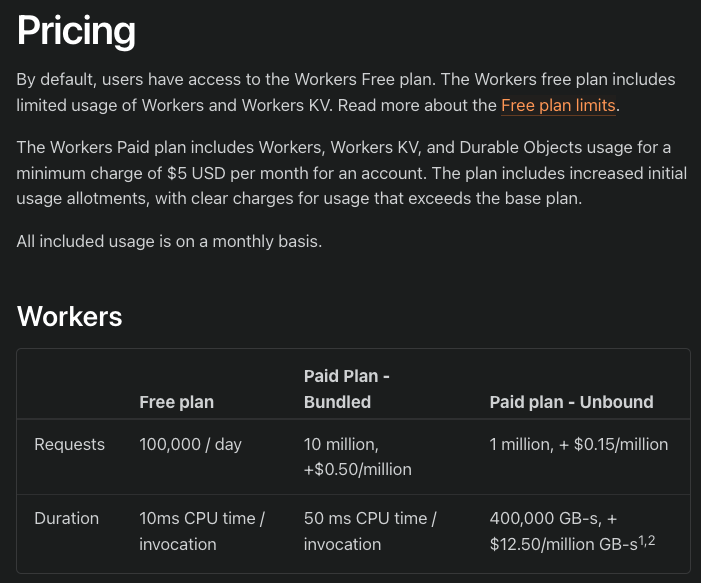
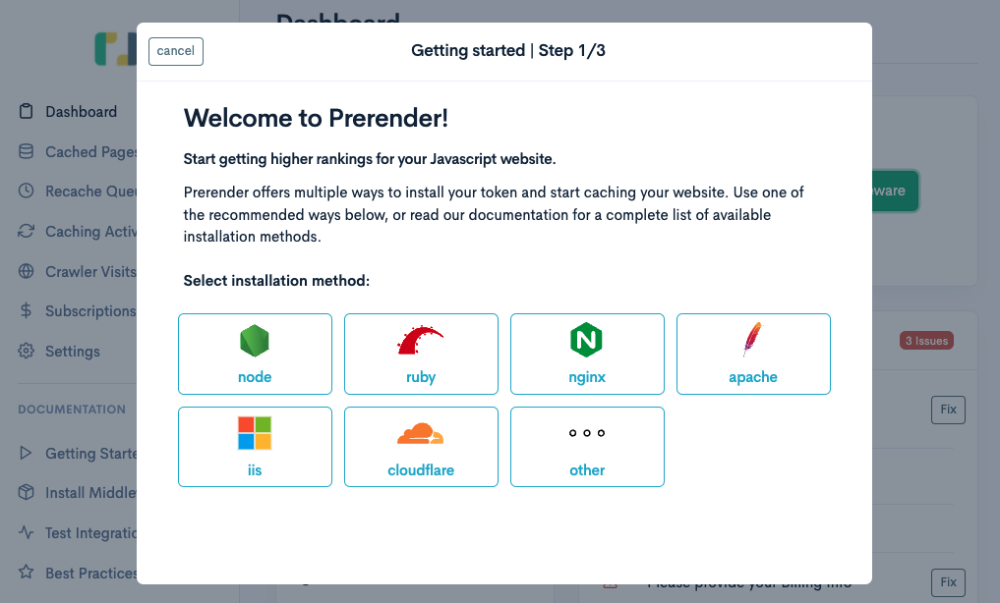
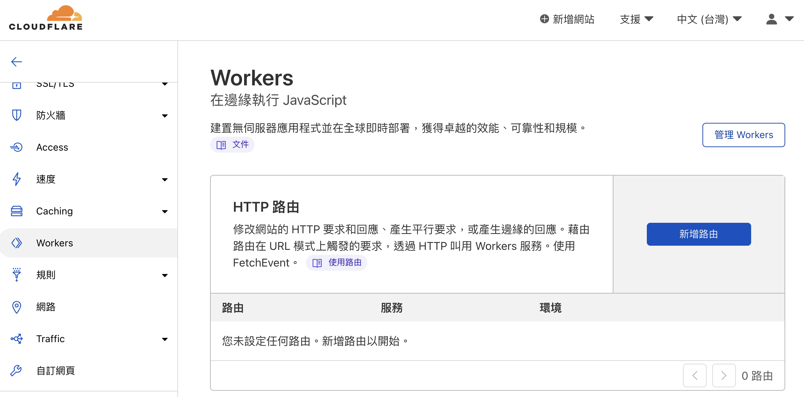
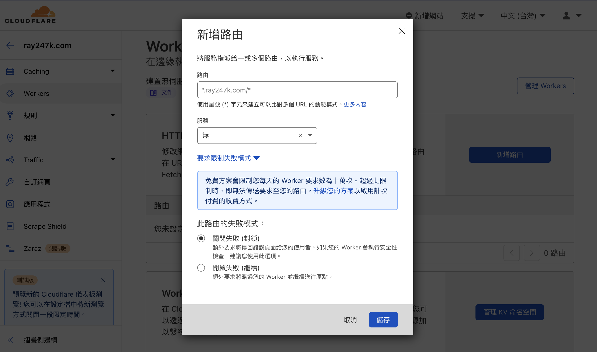

Enhancing SEO for SPA with Prerender
Addressing SEO challenges for CSR web pages, demonstrating both self-hosted and SaaS solutions

A Single Page Application (SPA) website utilizes Client-Side Rendering (CSR) to render its content.
Upon initial loading, the server only returns the root component, and subsequent data is fetched through API interactions.
However, for web crawlers responsible for ranking websites, the content obtained during crawling may appear empty.
While Google claims that their crawler executes JavaScript, other search engines may not necessarily do so.
To address this issue, a Prerender service is employed to achieve pre-rendering for web crawlers, optimizing search results.
Prerender
The principle involves setting up an internal headless Chrome to achieve pre-rendering of the webpage.
Two methods for using Prerender will be introduced below:
- Self-hosted: prerender
- SaaS service: Prerender.io
For self-hosting, a reverse proxy needs to be established.
Upon incoming requests, the user agent is checked. If it is a bot, the request is sent to the self-hosted Prerender service.
The service itself includes a headless Chrome, allowing rendering of HTML to be returned.
If it’s a regular user, the request is forwarded to the frontend server without rendering.
Using the Prerender.io SaaS service comes with limitations and may require payment if exceeding the free usage limits. However, it eliminates the need for self-management and setup. The advantage of self-hosting is greater flexibility in configuration.
Both solutions can be evaluated based on the use case.
If opting for the Prerender.io
solution, configuration can only be done when the website is already online.
Self-hosted
Package: Prerender The documentation is quite clear, and the setup is straightforward. Below is a step-by-step demonstration.
1. Installation
Create a folder, for convenience, let’s call it prerender.
Inside the folder, enter the command in the terminal:
npm install prerender
This completes the installation.
2. Configuration
In the prerender folder, create a file named server.js.
const prerender = require('prerender');
const server = prerender();
server.start();
3. Start
Enter the command in the terminal to start the service.
node server.js
The service will start on localhost at port 3000. If your service is also running on port 3000, choose a different port.
While your frontend project is running, open the terminal and enter:
curl "https://www.google.com.tw/" # Your SPA project URL
You will receive an empty DOM with only the root component, as the JS for fetching component content has not been executed.
This is a reason for poor SEO in SPAs. Although Google claims that their crawler executes JS, other search engines may not.
Now comes the magic moment. Open the terminal and enter:
curl "http://localhost:3000/render?url=https://www.google.com.tw/" # Your SPA project URL
You will get a large package of rendered results!
The preceding URL is the Prerender service address, and the parameter includes your project URL.
Prerender internally starts a headless Chrome to render the page and then returns the result.
Cache Configuration
Usually, when you self-host a Prerender service, it will re-render the page each time a request is made.
However, in practice, frequent re-rendering is unnecessary.
This can be optimized by setting up caching to retain rendered results for a certain period.
Cache package used: prerender-memory-cache
1. Installation
In the terminal, enter the command in the prerender folder:
npm install prerender-memory-cache --save
2. Configuration
Open the server.js file in the prerender folder and add the configuration declaration before server.start();;
server.use(require('prerender-memory-cache'))
That’s it. The second request should use the cached result.
3. Parameters
You can also set parameters in the prerender folder using the terminal.
Cache Maximum Number of Items
export CACHE_MAXSIZE=1000
default: 100
Cache Lifespan (seconds)
export CACHE_TTL=600
default: 60
4. Testing
After setting the lifespan, use the terminal to test:
curl "http://localhost:3000/render?url=http://localhost:3030/" # Your SPA project URL
打完第一次之後，去修改自己專案的一些內容（footer, title 之類）
確認用瀏覽器直接造訪畫面有出現變更
接著再重新使用終端機測試，應該會出現舊的 HTML 內容
這就證明他是使用快取的內容，而不是請求一來就重新渲染
所以剛剛才會建議修改 footer 或是 title，因為比較好確認
After the first test, modify some content in your project (footer, title, etc.) and confirm the changes by directly visiting the page in the browser.
Then, retest using the terminal. You should see the old HTML content.
This proves that it is using the cached content rather than re-rendering with each request.
Online Service Pricing Plans
Below is an example using Cloudflare Workers
to set up the Prerender.io service.
This is because the frontend project seems to have its own Nginx service, and I don’t want to intervene too much.
Besides, I’ve heard that Cloudflare Workers are powerful. It’s like a proxy at the forefront, so it can do many things.
Although I’ve never had the chance to use it, it seems like a good opportunity.
Prerender.io Pricing Plans

Cloudflare Workers Pricing Plans

Configuration
Go to the Prerender page, click on Install middleware and select the cloudflare option.

The official documentation has been updated.
Just follow the instructions in the document, and even those who can’t code can configure it confidently!
Follow the document and pictures for Cloudflare Integration
.
Open the sample configuration file as prompted: prerender/prerender-cloudflare-worker
.
You’ll see the index.js example. The only things to change are API_KEY and PRERENDERED_DOMAINS.
- API_KEY：The
tokenin the top left corner of the Prerender.io dashboard. - PRERENDERED_DOMAINS：The target domain for which routing rules will be set later.
Create a Cloudflare worker and paste the configuration file.
Ordinary Workers can be tested using the provided playground
by Cloudflare, but since we’re using a third-party service, it must be verified by Prerender to take effect.
Therefore, testing with the playground here is not possible.
After configuring the worker, open the Worker tab and choose Add route.

Next, set the Request Limit Failure Mode.
Open Failure (Continue) means that if the Worker fails when a request comes in, it will go directly to the service.
Close Failure (Block) will throw an error page, preventing users from continuing to access.
Since we don’t want the website to be inaccessible when reaching the free plan limit and not pre-rendering content doesn’t affect the website’s functionality,
choose to skip the Worker and execute it directly in case of failure.
After all, it’s just for pre-rendering, and it doesn’t matter if crawlers can’t access it this time; they can come back next time.

The routing rules should match the URL you set in the Worker configuration.
After setting it up, remember to go back to Prerender.io
and click “Next” to complete the verification.
Then, wait for the verification to be completed.
Usually, after clicking “Verify,” the verification results will appear after a few seconds.
If you want to simulate the result obtained when crawling after verification, you can use:
curl -A Googlebot "https://{your-online-service-url}"
This simulates the result obtained by the Googlebot crawler.
Since we specified a specific user agent in the Worker’s Nginx configuration file, the Cloudflare Worker will determine whether to forward it to the Prerender.io
service for processing.
Without the -A Googlebot parameter, it won’t forward for rendering.
It will return the CSR result that regular users would get, which is the unrendered webpage content.